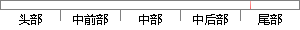

图4-32 free_mem()函数代码
片段位置图

相似结果
相似片段：23.3通配符掩码配符掩码是一个32比特位的数字字符...4.{各功能函数的对应关系代码巾所示 所包括的函数...gerL—free_mem函数的功能:检查空闲的内存空间 long...
| 标题 | 《基于Linux防火墙的日志研究和设计》 |
| 对比库 | 中国学位论文全文数据库 |
| 作者 | 周鹏 |
| 机构 | 四川大学 |
| 分类 | 软件工程 |
| 年份 | 2004 |
| 相似率 | 75% （轻度抄袭） |